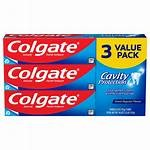
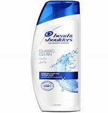
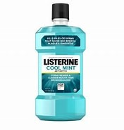
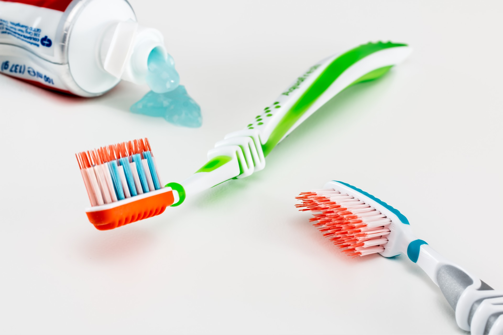
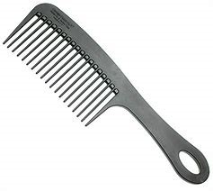
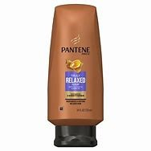
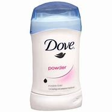
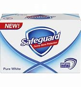
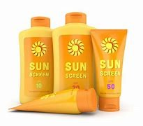

Monday-Sunday: 7:00 A.M-9:00 P.M
Banay, Sta. Cruz, Ilocos Sur
09356457325
| Name | Weight/volume | Description | Ingredients/Contents | Image |
|---|---|---|---|---|
| Colgate | 214 grams, 173 grams, 200 grams | Colgate is a well-known global brand that primarily produces oral hygiene products such as toothpaste, toothbrushes, mouthwash, and dental floss. Founded in 1806 by William Colgate, the company has grown into one of the leading names in dental care. Colgate's products are designed to promote good oral health by helping to prevent cavities, reduce plaque, and fight gum disease, while also offering various options for whitening and fresh breath. | Water, Hydrated Silica, Glycerin, Sorbitol, Sodium Lauryl Sulfate, Arginine, Flavour, Zinc Oxide, Cellulose Gum, CI 77981, Poloxamer 407, Zinc Citrate, Tetrasodium Pyrophosphate , Xanthan Gum, Benzyl Alcohol, Cocamidopropyl Betaine, Sodium Fluoride, Sodium Saccharin, Phosphoric Acid, Sucralose Sodium Fluoride 0.32% w/w (equiv. 1450 ppm F),Contains: Sodium Fluoride 0.32% w/w (equiv. 1450 ppm F),Allergen Free From: Gluten| Sugar| Added Sugar |  |
| Head & Shoulders | 835 ml | Head and Shoulders' unique formula works 7 surface layers deep in your scalp to help stop dandruff at its source and maintain healthy hair. Brought to you by America's #1 Dermatologist Recommended brand, this formula is gentle enough on hair for everyday use, but powerful enough to stop the toughest flakes. With regular use, your scalp remains moisturized and flake free for continued scalp health. | Water, Dimethiconol, Glycol Distearate, Cocamidopropyl betaine, Fragrance, Methylisothiazolinone, Zinc Carbonate, Guar hydroxypropyltrimoni chloride, Brilliant Blue FCF, Cocamide MEA, Polyquaternium, D&C Red 33. |  |
| Listerine | 50.72 fl 0z, 8.45 fl oz | Protect your mouth from germs and get fresh breath with Listerine Freshburst Antiseptic Mouthwash for bad breath. It kills 99.9% of germs that cause bad breath, plaque, and gingivitis for a fresher and cleaner mouth than brushing alone. Clinically shown to reduce 52 percent more plaque and 21 percent more gingivitis than brushing and flossing alone, this antiseptic mouthwash provides a deep clean that cares for your whole mouth. | Ethanol(Alcohol), Water, Flavoring Agents, Sodium Saccharin, Benzoic Acid, Poloxamer 407, Thymol, Eucalyptol, Menthol, Methyl Salicylate. |  |
| Toothbrush(Oral B) | 20-40 grams | Clinically proven. Removes more plaque than an ordinary manual toothbrush and polishes away surface stains. 2D Action: High Speed Oscillating / Rotating Motion. 2 Minute Timer: Signals after 2 minutes to help you brush for the recommended brushing time. | Nylon Bristles, Plastic Handle, Rubber Grips. |  |
| Comb | 10-30 grams | A comb is a tool consisting of a shaft that holds a row of teeth for pulling through the hair to clean, untangle, or style it. It is used for arranging and caring for hair, untangling it, or holding it in place.It can be made up of plastic, wood, or metal. | Plastic, Wood, Metal. |  |
| Pantene | 88 ml, 400ml, 750 ml | Pantene is a popular brand of hair care products known for its shampoos, conditioners, and treatments. It was originally launched in 1945 by the Swiss company Hoffmann-La Roche and is now owned by Procter & Gamble. Pantene's products are designed to promote healthy, shiny, and manageable hair, and they often focus on addressing different hair types and needs. | Water (Aqua), Sodium Lauryl Sulfate (SLS) / Sodium Laureth Sulfate (SLES), Dimethicone, Panthenol(Pro_Vitamin B5), Glycerin, Cocamidopropyl Betaine, Citric Acid, Fragrance, Hydrolyzed Wheat Protein, Polyquaternium-10, Argan Oil, Aloe Vera, Sodium Chloride, Cetearyl Alcohol. |  |
| Dove | 73.7 g, 48.2 g, | Dove deodorants are designed to offer effective protection against odor and wetness while being gentle on the skin. They are known for their moisturizing properties and skin-friendly formulations. Often including ingredients that help nourish and care for the delicate underarm area. | Aqua, Aluminum Chlorohydrate, Helianthus Annuus Seed Oil, Glycerin, Steareth-2, Parfum, Steareth-20, Disodium EDTA, Pentaerythrityl Tetra-Dibutyl Hydroxyhydrocinnamate, Alpha-Isomethyl Ionone, Benzyl Benzoate, Benzyl Salicylate, Benzyl Alcohol, Citronellol, Eugenol, Geraniol, Hexyl Cinnamal, Hydroxycitronellal, Isoeugenol, Limonene, Linalool |  |
| Safeguard | 93 grams, 473 ml | Safeguard is a well-known brand of antibacterial soap and personal care products, trusted for its ability to cleanse and protect the skin. The brand focuses on providing protection against germs while maintaining skin health. Safeguard products are designed to eliminate harmful bacteria and germs, offering a clean and hygienic feeling with each use. | water, sodium lauryl sulfate, sodium laureth sulfate, lauramide DEA, glycol distearate, cocamidopropyl betaine, sodium sulfate, fragrance, guar hydroxypropyltrimonium chloride, citric acid, DMDM hydantoin, tetrasodium EDTA, red 4, yellow 5 |  |
| Sunscreen | 88 ml, 118 ml, 177ml | Sunscreen is a skincare product designed to protect the skin from the harmful effects of ultraviolet (UV) radiation from the sun. It works by either absorbing or reflecting UV rays, helping to prevent sunburn, premature aging, and skin cancer. Available in various formulations such as lotions, sprays, and sticks, sunscreen is essential for daily sun protection, especially during prolonged outdoor exposure. | Oxybenzone, Avobenzone, Homosalate, Octinoxate, Octocrylene, Cinoxate, Dioxybenzone, Enzulizole, Meradimate, Padimate O, Sulisobenzone, Octisalate, Aminobenzoic Acid, Trolamine Salicylate. |  |
| Cotton Balls | 50 grams, 200 grams | Cotton balls are small, soft, round balls made from 100% cotton, commonly used for personal care, cosmetics, and medical purposes. They are absorbent and gentle, making them ideal for applying or removing makeup, cleaning wounds, or using with toners or astringents. Available in bulk or individually wrapped packs, cotton balls are a versatile and essential tool in many everyday hygiene and beauty routines. | Cotton | |